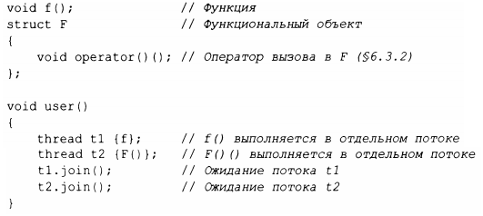
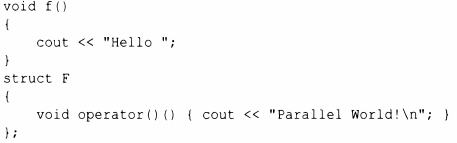

⇐15.1 Введение 15.3 Передача аргументов⇒
Вычисление, которое потенциально может быть выполнено одновременно с другими вычислениями, называется заданием (task). Поток (thread) - это системное представление задания в программе. Задание, которое должно выполняться одновременно с другими заданиями, запускается на выполнение путем создания объекта std::thread (описан в заголовочном файле <thread>) с заданием в качестве аргумента. Задание представляет собой функцию или функциональный объект:
Вызовы join() гарантируют, что мы не выйдем из user(), пока потоки не будут завершены. "Присоединиться" к потоку thread означает "ждать окончания работы потока".
Потоки программы совместно используют одно адресное пространство. В этом потоки отличаются от процессов, которые в общем случае непосредственно не используют данные совместно. Это отличие потоков позволяет им взаимодействовать через совместно используемые объекты (§ 15.5). Такой обмен информацией обычно контролируется блокировками или другими механизмами, предотвращающими гонку данных (неконтролируемый одновременный доступ к переменной).
Программирование параллельных заданий может быть очеиь сложным. Рассмотрим возможные реализации заданий f (функции) и F (функционального объекта):
Это пример ошибки: здесь f и F () используют объект cout без какой-либо синхронизации. Полученный результат будет непредсказуемым и может изменяться от запуска программы к запуску, так как порядок выполнения отдельных операций в двух задачах не определен. Программа может выдавать "странный" результат, такой как
Только определенные гарантии в стандарте спасают нас от гонки данных в рамках определения ostream, которая может привести к краху приложения.
При определении заданий параллельной программы наша цель состоит в том, чтобы полностью разделить задания, кроме случаев, когда они общаются между собой простым и очевидным образом. Самый простой способ представить себе параллельное задание - представить его в виде функции, которая работает одновременно с функцией, вызвавшей ее. Для этого нам просто нужно передать аргументы, получить результат обратно и убедиться, что у них нет никаких совместно используемых данных (отсутствуют гонки данных).